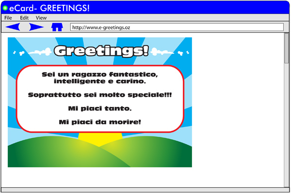

Extra
Una cartolina
Why don’t you write a message to a person who is special to you and tell them what you think of them? Per esempio:

Vuoi delle idee?
Go to www.yahoo.it. Select cartoline.
Choose una cartolina and una categoria that appeals to you.
Scrivi il tuo messaggio
Invia ...
 |
Go to Una cartolina if you are not sure of the meaning of words in this
activity. |
Un e-pal in Italia
È così facile! Un’amicizia in Italia con un clic!
È una soluzione semplice!
Do an Internet search of some real e-pal sites. Try www.ipfs.org
View a variety of the online profiles. Use this worksheet_A2_extra to:
- Make a list of the phrases and expressions used that you are able to understand. Write the meaning in English.
- Write the expressions that you don’t understand. Try and find out what they mean.
- Complete il modulo for your advertisement.
|
Refer to Un e-pal in Italia if you are not sure of the meaning of words. |
Un’ intervista
How would you feel about being a reporter and having a famous person on your own show?
How many questions could you ask in Italian?
Which questions would you ask to find out about their biografia?
Revise Attività 12 – Un personaggio famoso will be helpful.
Practise your questions until you feel confident. As this is your first interview, you need to be really well prepared.
|
Use your mp3 player or any recording facility available to record your questions and listen to the playback. This is an excellent way to rehearse for an interview. |
|
Un’intervista has some practice questions you can ask at an interview. |
You’ve really come a long way now. Well done! |